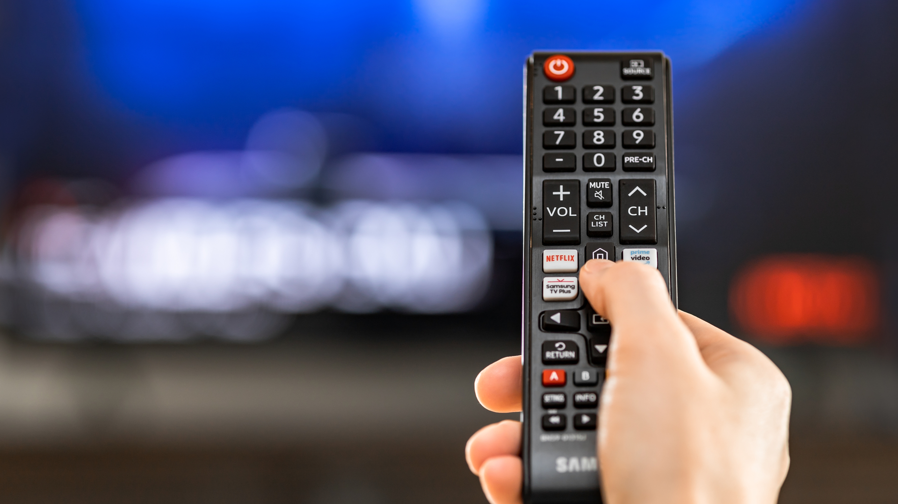

Three designed objects
TV REMOTE CONTROL
Remote control is a great design with the below reasons.
TV remote is commonly used to issue command at a distance to Tv, DVD player and other electronic devices attached to Tv. It is used for controlling substations. It commonly consumer infrared devices which send digitally coded pulses of infrared radiation. It has control functions such as: Tv standby (turn on and off), Number button, Guide button, Input select and quick setting,Text and Back buttons and Navigation buttons; up, down, left, right.